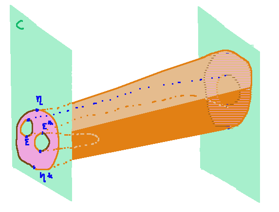

Do Univalent Universes Arise from Higher Adjoints?
A 2-Category of Trees
If we let a 2-category be freely generated by postulating that we have
- an object $C$
- a morphism $f : C \to C$
- a 2-cell $\eta : \rid_C \to f$
- a 2-cell $\mu : f \o f \to f$
then the string diagrams we can draw for 2-cells
in $\C$ look like forests:
 We might squint and think that this is kind of like the
set of (order-preserving) functions from one finite ordered set
to another. For example, the above image is sort of like the
function $h$ that takes $\{0,1,2,3,4,5\}$ to $\{a,b,c\}$ by
assigning $h(0)=0,h(1)=a,h(2)=a,h(3)=a, h(4)=b$. But it's not
exactly that: the string diagram keeps track of more information
than the mere function $h$ does. The string diagram keeps track
of the fact that we first collapsed 0 and 1, then merged with 2,
then merged with 3. The function $h$ knows merely that 0,1,2,3
all collapse together without remembering how they got there.
We might squint and think that this is kind of like the
set of (order-preserving) functions from one finite ordered set
to another. For example, the above image is sort of like the
function $h$ that takes $\{0,1,2,3,4,5\}$ to $\{a,b,c\}$ by
assigning $h(0)=0,h(1)=a,h(2)=a,h(3)=a, h(4)=b$. But it's not
exactly that: the string diagram keeps track of more information
than the mere function $h$ does. The string diagram keeps track
of the fact that we first collapsed 0 and 1, then merged with 2,
then merged with 3. The function $h$ knows merely that 0,1,2,3
all collapse together without remembering how they got there.
A 2-Category of Ordered Functions
If we instead let a 2-category be freely generated by postulating that we have
- objects $C, D$
- morphisms $u : D \to C$ and $f : C \to D$
- a 2-cell $\eta : \rid_C \to uf$
- a 2-cell $\epsilon : fu \to \rid_D$
- the triangle equalities for $\eta$ and $\epsilon$ being the unit and counit of an adjunction
Then naturality naturally equates diagrams that represent equal functions.
However, this only captures order-preserving functions between finite ordered sets.
A 3-Category of Braided Functions
We could go up one more dimension, working in a 3-category, postulating
- objects $C, D$
- morphisms $u : D \to C$ and $f : C \to D$
- a 2-cell $\eta : \rid_C \to uf$
- a 2-cell $\eta^* : uf \to \rid_C$
- some 3-cells of type $\rid_{\rid_C} \to \eta^*\eta$
and $\eta\eta^* \to \rid_{\rid_C} $
In this case the 2-cells $\rid_{\rid_C} \to \rid_{\rid_C}$ resemble finite sets,
and the 3-cells between them resemble arbitrary maps between them --- except
they keep track of extra "braiding" information. For example, the following
3-cell would be distinguished from the "identity function on the 2-element set":
An $n$-Category of Functions between Higher Sets
Presumably if we go up to sufficiently high dimensions, these
"low-dimensional" phenomena stabilize and disappear, and we're
left with a $n$-dimensional category whose $(n-1)$-cells are
finite sets and whose $n$-cells are functions between them. Or
perhaps this doesn't actually stabilize at some finite stage and
$\mathbf{FinSet}$ is attained as some kind of limit.
However, there are more cells we could have added which could
give us more interesting structure. Even at the 3-category
level, let's imagine throwing in all of:
- objects $C, D$
- morphisms $u : D \to C$ and $f : C \to D$
- a 2-cell $\eta : \rid_C \to uf$
- a 2-cell $\eta^* : uf \to \rid_C$
- a 2-cell $\epsilon^* : \rid_D \to fu$
- a 2-cell $\epsilon : fu \to \rid_D$
- various unspecified 3-cells
With these tools we could imagine describing sets with elements
with holes in them, just like higher types in homotopy type
theory:

And at sufficiently high dimensions it seems conceivable that a
wide range of HITs would be attainable, and all functions
between them.
Question 1: Exactly what should the postulated set
of cells be at each dimension, to recover the category of
finite higher sets and maps between them?
It seems like some kind of very strong high-dimensional
adjoint equivalence at all dimensions but the highest, but I
don't know enough about higher categories to make a concrete
conjecture. And, I guess, follow-up question:
Question 2: Does this algebraically created "universe of
finite higher sets" satisfy univalence?